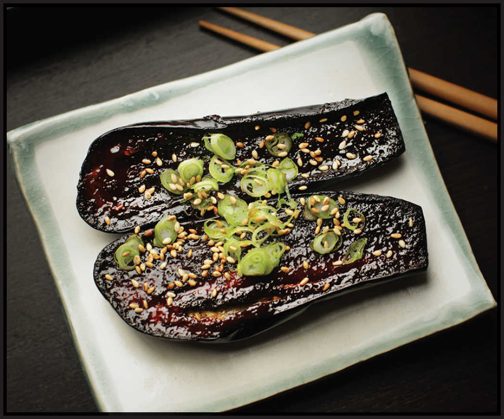

NASU DENGAKU (BROILED MISO EGGPLANT)

Yield Serves 4 |
Active Time 30 minutes Total Time 30 minutes |
INGREDIENTS
2 tablespoons (30 ml) mirin
2 tablespoons (20 ml) dry sake
¼ cup (75 g) red or brown miso
¼ cup (50 g) sugar
4 Japanese, Italian, or Chinese eggplants, stemmed and cut in half lengthwise (about 1 pound/450 g)
1 tablespoon (15 ml) peanut, rice bran, or other neutral oil
To Serve:
4 cups steamed white rice (optional)
Toasted sesame seeds, for garnish
2 scallions, thinly sliced
Deep, rich red miso is a natural partner for the smoky flavor of grilled or broiled eggplant. This classic Japanese vegetable dish is delicious on its own or in a bowl of rice. It can be done in the broiler or with a combination of the grill and the broiler. You can precook the eggplant through the end of step 4 and store it in the refrigerator for up to 3 days before proceeding with step 5.
DIRECTIONS
1 Combine the mirin, sake, miso, and sugar in a small bowl and stir with a fork until a homogenous paste is formed. Set aside.
2 Rub all surfaces of the eggplants with vegetable oil.
3 To Start on the Grill: Preheat a gas or charcoal grill to high heat. Grill the eggplant, cut-side down, until charred grill marks appear, about 1½ minutes. Rotate 45 degrees and cook until checkered hash marks appear, about 1½ minutes longer. Flip and continue cooking until nearly tender, about 4 minutes longer. Transfer the eggplant to a large plate and allow to cool slightly. Adjust the broiler rack to 4 to 6 inches from the heat source and preheat the broiler or toaster oven broiler to high. Proceed with step 5.
To Start in the Broiler: Adjust the broiler rack to 4 to 6 inches from the heat source and preheat the broiler or toaster oven broiler to high. Place on a rimmed baking sheet or foil-lined broiler pan, cut side up, and broil until lightly browned and fully tender, about 5 minutes. Remove from the oven and proceed with step 5.
4 Spread the miso glaze on the cut surface of every eggplant. Place the glazed eggplant on a rimmed baking sheet or foil-lined broiler pan, cut side up. Broil until the glaze has begun to caramelize, about 4 minutes. Transfer to a platter or individual rice bowls, sprinkle with sesame seeds and scallions, and serve.